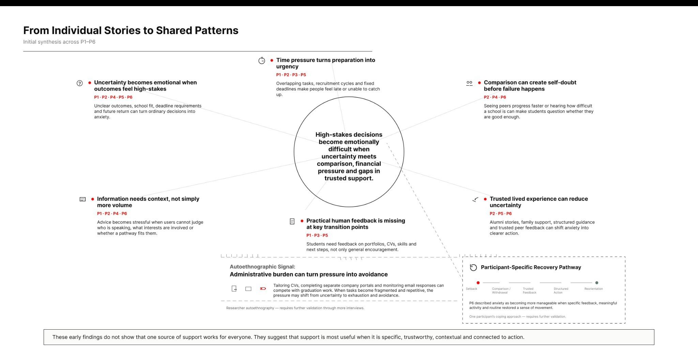
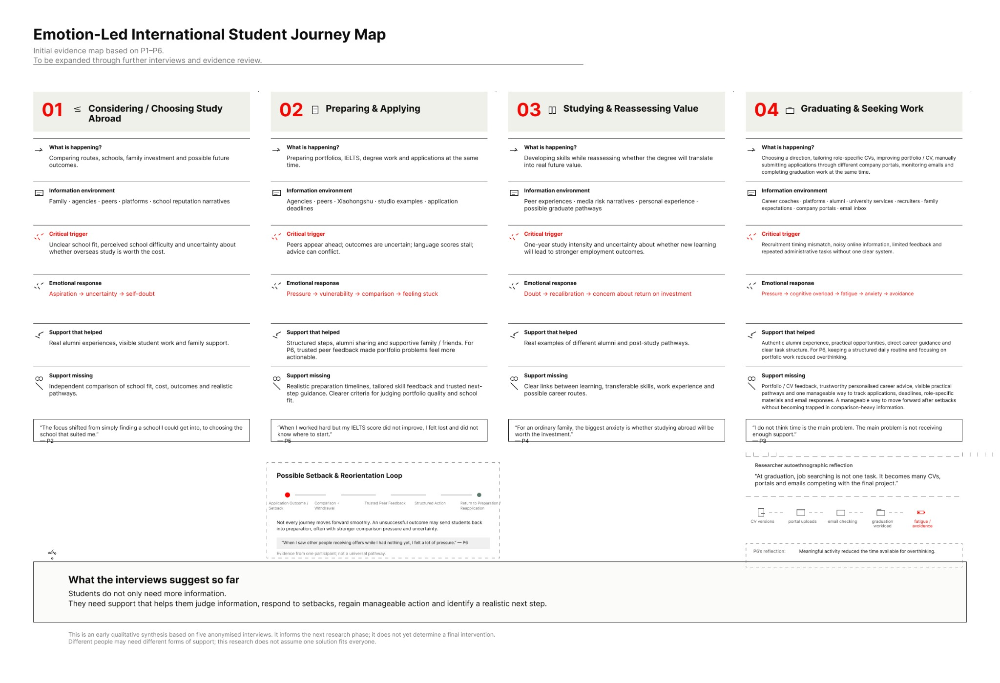
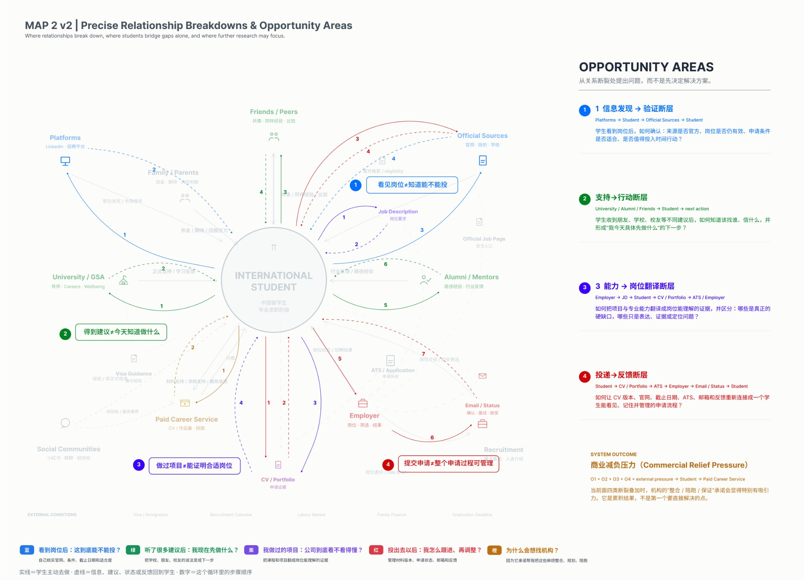

Service & Transformation / Research in progress
The Anxiety Market
How might support help Chinese international students navigate the transition from study to graduate employment in the UK?
Exploratory research · not a launched service
When uncertainty becomes a service problem.
This transformation design project explores how information uncertainty, comparison, administrative overload and fragmented support shape the transition from final study to graduate job seeking.
The inquiry asks what trustworthy support should provide. It does not assume that all paid career services are harmful.
From conversations to patterns.
The source research includes six anonymised open-narrative interviews. Participant evidence is kept separate from researcher autoethnography, then synthesised into shared patterns and an emotion-led journey map.


Looking beyond the individual.
Stakeholder mapping connects students, institutions, information sources and commercial support. Relationship breakdowns become starting points for opportunity areas, rather than proof of a finished solution.

A direction for further testing.
An exploratory hypothesis is that, under uncertainty and overload, commercial support can feel like relief. Further validation is needed. The work currently presents research, systems framing and an initial prototype direction; no commercial launch, measured impact or validated service outcome is claimed.